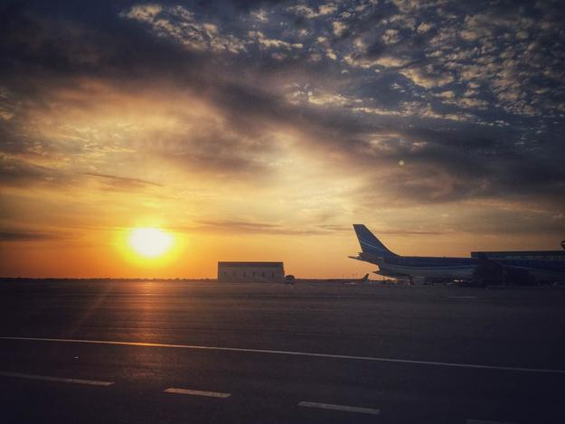

土耳其，我喜欢你，像风走了八千里...
沙与沙不同，海与海远隔。人与人之间的距离也总是这般的奇妙，一起经历的，感受会不同；一同回忆的，故事也不同。
八月的土耳其，骄阳如火，时局叵测。从恐袭到政变，从外交部发文要求中国公民暂勿前往土耳其到土国当局宣布全国进入三个月紧急状态清理门户，我们那颗说走就走的心还未启程就已经开始了颠沛流离历经万难的折磨。感叹我平生未曾有过多么伟岸的心愿，而今唯一所望却是世界和平，土耳其安好。
土耳其国土面积约是中国的十二分之一，北部西部西南部沿海，东部东南部与伊朗、伊拉克、叙利亚接壤。一般环游土耳其会去到中部和沿海地区，如果自驾游建议逆时针方向沿海走景致更美，如果非自驾游就无所谓逆时针或顺时针走向了。我们这次选择顺时针环游，由于对卡帕多西亚太过神往，于是离开伊斯坦布尔第一站便飞往了格雷梅，然后向南抵达安塔利亚，再一路北上经过费特西耶、棉花堡、塞尔丘克，最后回到伊斯坦布尔飞回北京，全程十五天，实际在土十三天。

今年土耳其游客大幅减少，旅游业低迷。中国人在土耳其驻华官网上申请电子签证提交资料后一分钟出签，自己打印携带即可，费用60美金。过海关时不需要填写外国人入境申请表，不需要出示往返机票和酒店订单，反正这次我们都没有被要求，一路绿灯，不能更通畅。
伊斯坦布尔有两个机场，SABIHA GOKCEN亚洲机场和ISTANBUL ATATURK欧洲机场，从欧洲机场到老城相对近。从亚洲机场去老城要经过博斯普鲁斯海峡，过桥就是欧洲区了，车程近两个小时。
之前看到许多攻略上说很难找到游船码头不知道哪家是正规的，我们却误打误撞乘坐了本地人往返欧亚的轮渡。其实很简单，从老城沿着铁轨走出来到海边，经过鸽子广场，然后过马路左拐大概走七八分钟的样子会看到一个码头，门口有自动售票机，这里便是本地人往来欧亚的轮渡码头了，8个里拉可以坐个来回，单程20分钟，海上风景超级赞。
选择乘飞机前往卡帕多西亚，土耳其国内机票便宜，一般提前买都能买到软妹币两百出头的票，比乘坐夜班大巴车舒服许多。内夫谢希尔机场很小，从这里到格雷梅镇上约四十分钟车程，另外开塞利机场也一样可以中转到格雷梅镇上，距离差不太多。机场没有接驳巴士，打车很贵，建议订酒店接机或者在万能的某宝上约车，约20里拉/人。
最近很流行一句话：我喜欢你，像风走了八千里，不问归期。据说从北京到伊斯坦布尔的距离刚巧是八千公里，如此就容我借用一下这句话吧，以此纪念我们这十五天如诗如画般美妙的土耳其之旅。
最后祝福世界和平，祝福土耳其平安美好！